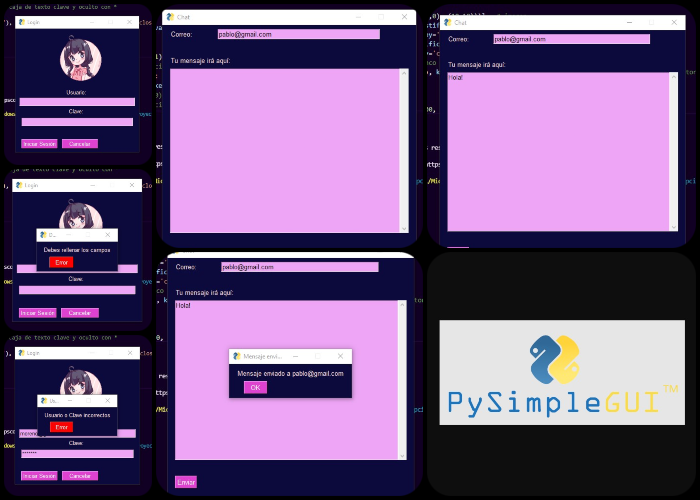

<div class="row">
    <div class="div1">
        <div id="proyecto">
            <section>
                <h1 class="heading titulo">Proyectos</h1>
                <div class="proyecto-block" *ngIf="isLogged">
                    <div style="text-align:center" *ngIf="isLogged">
                        <button type="button" class="btn btn-dark" routerLink="/nuevoproy" *ngIf="isLogged">
                            <i class="bi bi-card-text"></i> Añadir Proyecto
                        </button>
                    </div>
                </div>

                <div class="proyecto-block" *ngFor="let Proyecto of proyect">
                    <h3>{{Proyecto.nombreP}}</h3>
                    <h5>{{Proyecto.descripcionP}}</h5>
                    
                    <div style="float:right" *ngIf="isLogged">
                        <button class="btn btn-success" routerLink="/editproy/{{Proyecto.id}}">
                            <i class="bi bi-pencil-fill"></i></button>
                    </div>
                    <div style="float:right" *ngIf="isLogged">
                        <button class="btn btn-danger" (click)="delete(Proyecto.id)">
                            <i class="bi bi-trash-fill"></i></button>
                    </div>
                </div>
            </section>
        </div>
   </div>
</div>


<!-- <div class="proyecto">
    <h1 class="titulo">Proyectos Realizados</h1>
    <div class="row">
        <div class="col-md-6 parte1">
            <h1>Login</h1>
            <p>Se emuló un <span>login</span> de mensajería utilizando <span>PySimpleGUI</span>. Se implementó verificación de datos para <span>loguearse</span> y una simulación de envío de correo.<br/>
            Listado de acciones:<br/>
            - En la primera ventana dejo dos botones. Uno para dar inicio y otro para cancelar y cerrar la interfaz.<br/>
            - Si no se llena ninguna caja de texto, aparece un <span>pop-up</span> que indica rellenar las mismas.<br/>
            - Si se tipea algún dato erróneo, aparece un <span>pop-up</span> que dice 'Usuario o clave incorrectos'.<br/>
            - Si los datos son correctos, se habilita una segunda ventana donde se ubica la caja de texto del correo y la del mensaje.<br/>
            - En la segunda ventana solo dejo un botón de enviar, ya que este habilita el <span>pop-up</span>, que dice que se envió el mensaje al correo indicado.<br/>
            - Cuando se da click en el "Ok" del <span>pop-up</span>, se actualizan las dos ventanas quedando en blanco.</p>
        </div>
        <div class="col-md-6 parte2">
            
        </div>
    </div>
</div> -->
